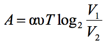
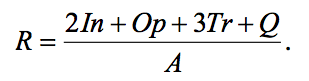

Зависимость объема спроса q(единиц в месяц) на продукцию предприятия-монополиста от цены p (тыс. руб.) задается формулой q = 100 − 10 p . Выручка предприятия за месяц r (в тыс. руб.) вычисляется по формуле r(p)= q ⋅ p . Определите наибольшую цену p, при которой месячная выручка r(p) составит не менее 240 тыс. руб. Ответ приведите в тыс. руб.
6
Для определения эффективной температуры звезд используют закон Стефана–Больцмана, согласно которому мощность излучения нагретого тела P, измеряемая в ваттах, прямо пропорциональна площади его поверхности и четвертой степени температуры: – постоянная, площадь S измеряется в квадратных метрах, а температура T – в градусах Кельвина. Известно, что некоторая звезда имеет площадь , а излучаемая ею мощность P не менее . Определите наименьшую возможную температуру этой звезды. Приведите ответ в градусах Кельвина.
4000
Коэффициент полезного действия (КПД) кормозапарника равен отношению количества теплоты, затраченного на нагревание воды массой (в килограммах) от температуры до температуры (в градусах Цельсия) к количеству теплоты, полученному от сжигания дров массы кг. Он определяется формулой , где – теплоемкость воды,  – удельная теплота сгорания дров. Определите наименьшее количество дров, которое понадобится сжечь в кормозапарнике, чтобы нагреть m = 83 кг воды до кипения, если известно, что КПД кормозапарника не больше 21%. Ответ выразите в килограммах.
– удельная теплота сгорания дров. Определите наименьшее количество дров, которое понадобится сжечь в кормозапарнике, чтобы нагреть m = 83 кг воды до кипения, если известно, что КПД кормозапарника не больше 21%. Ответ выразите в килограммах.
18
Водолазный колокол, содержащий в начальный момент времени υ = 3 моля воздуха объемом V1 = 8л, медленно опускают на дно водоема. При этом происходит изотермическое сжатие воздуха до конечного объeма V2. Работа, совершаемая водой при сжатии воздуха, определяется выражением  (Дж), где α = 5,75 постоянная, а T= 300 К − температура воздуха. Какой объем V2 (в литрах) станет занимать воздух, если при сжатии газа была совершена работа в 10350 Дж?
2
Независимое агентство намерено ввести рейтинг новостных интернет-изданий на основе оценок информативности In, оперативности Op, объективности публикаций Tr, а также качества сайта Q. Каждый отдельный показатель оценивается читателями по 5-балльной шкале целыми числами от 1 до 5. Аналитики, составляющие формулу рейтинга, считают, что объективность ценится втрое, а информативность публикаций − вдвое дороже, чем оперативность и качество сайта. Таким образом, формула приняла вид

Каким должно быть число A, чтобы издание, у которого все оценки наибольшие, получило бы рейтинг 1?
35